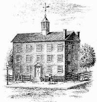
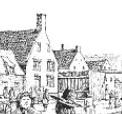
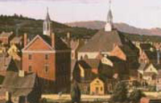

|
 Colonial Albany was the focal point of an emerging upriver region. Comunity life revolved around water-level Court Street. With the Dutch Church at its northern intersection with State Street and the city hall/court house/jail set just inside the old stockade two short blocks to the South, people came from every part of the surrounding countryside to conduct public, commercial, and spiritual business. Before 1800, most important Albany people located themselves within hailing distance of the city's main crossroads and its central business district. Anchored by those two large edifices, as late at the 1770s most of the other Court Street buildings were the small and aging homes of Albany's traditional families whose forebears first settled North from Fort Orange more than a century earlier. The eighteenth-century streetscape ran along the Hudson but the buildings faced inward as business-oriented Albany literally turned its back on the river. Traditionally known as the "Stadt Huys," Albany's first public building stood on the northeastern corner of Court and Hudson Streets and was the meeting place for the town court. It became a city hall when Albany was granted a municipal charter in 1686. That document identified "the Towne Hall or Stadt House" among Albany's public assets. Like others in the early Albany cityscape, the first city hall was small - resembling a substantial residence of the day rather than an outstanding public building. It consisted of large single rooms on the first and second floors and a jail in the cellar that was half below street level and half above. The common council and the city and county courts held regular sessions in those chambers. The city and county clerk kept the registry there as well. The first city hall is shown on the maps made during the 1690s by John Miller and Wolfgang Roemer and also on the panorama by William Burgiss depicting Albany about 1717. By the 1730s, the city fathers, the clerk, and the sheriff were complaining that the now old Stadt Huys was inadequate to serve a growing city and county. In 1738, Albany successfully petitioned the provincial government for funds to build a new "City Hall which was very much needed." In 1741, Albany erected a much more substantial building on the same location. The new city hall was a large but plain brick building, three stories high, with a steep-pitched roof. The bell in its belfry was rung each day at noon and at 8 p.m. After the church and fort, it was the largest structure and stood out on the Albany skyline. The Albany Congress met there in 1754 and the Declaration of Independence was read to the people of Albany from its steps in 1776. A large "City Hall Dock" was built immediately behind the building in 1766. During the Revolutionary era, the city hall housed the Albany Committee of Correspondence - an extra-legal body that served as the civilian arm of the crusade for American liberties and also governed the city between 1775 and 1778. For a time, prisoners of war and Tories joined common criminals in the basement of the Albany jail. Beginning in 1780 - and intermittently until 1797, the New York State government also held sessions in the Court Street building. After the war, the Albany municipal building housed the city and county governments, the courts, registry, jail, and also hosted the state government whenever it met in Albany. However, the aging structure struggled to accommodate the increased demands on its space. In booming post-war Albany, the riverfront, and Court Street, in particular had become a crowded and bustling business center. By the 1790s, both state and city leaders were lobbying to relocate public functions away from the waterfront and to a dedicated site more suitable for the operations of an expanding government. For the first time, Albany's municipal core was about to change. A cartographic plan of the city published in 1794 set the Court Street city hall building on the street grid and depicted it graphically in an inset. But the most prominent new feature on that map was a large open space called the " Public Square" which was situated up the hill at the juncture of State, Eagle, and Lion Streets. A new "Prison" building was located on the northeastern corner of State and Eagle Streets. It too was represented in an inset. Opened a few years earlier, Albany's first, municipal cemetery plot bordered the square on the South. The centerpiece of this public complex was the New York State Capitol building (erected in 1806-08) which sat near the crest of the hill and overlooked the city. A few years later, an Academy building on the North side completed the frame. And by that time, a State office building had opened on the southwestern corner of State and Lodge Streets. In 1809, the Albany municipal government relocated to the State Capitol - meeting there until the new city hall (also erected on the Public Square) opened in 1831. The downtown city hall then became the Albany Museum. Abandoned in 1831, the old building experienced several fires and finally was demolished a few years later. This description of the 17th century structure is taken from Van Laer's introduction to the Court Minutes of Fort Orange . . .: "A brick building was built, with two cellars, each 21 feet square, separated by a two-brick wall. The foundation of the said cellar is 3 or 4 feet in thickness, built of substantial stone (hauled a distance of 16 miles), 6 feet high, to the level of the ground, and on top of this is a brick wall, two feet high and three bricks thick, upon which rest the cellar beams. The first story is divided into three parts: at the north end is a room 21 feet square, inside measure, with a brick chimney; at the south end a kitchen 16 feet in width and 21 feet in length, also with a chimney and provided with a bedstead and cupboard of wainscot; and in the middle a hallway 5 feet wide, separated from the large room by a one-brick wall. The upper story is divided by a half-brick wall into two equal parts, each 21 feet square. At the north end is a room intended for the court; at the other end an office, in which are a wainscoted bedstead and a chimney. Access to this floor is by a winding stairway and a separate landing. On this landing there are three doors, one to the left, which gives access to the court room; another toward the front, which gives access to the office and which is faced by an oval window in the west wall; and a third door to the right, which gives access to the attic by means of a winding staircase. This attic extends over the whole house and above it there is a loft, suitable for the storage of powder and other ammunition. In short, it is a strong and substantial house, the walls below and above (upon which the beams rest without corbels) being one and a half bricks thick, provided at each gable end with a double chimney, braced by 42 anchors and built of choice clinker brick. The house is covered with well burned tiles and in every one's opinion makes a strong, commodious and handsome structure."
Nineteenth century engraving of the Albany City Hall (corner of State and Hudson Streets) as it might have looked during the latter
part of the eighteenth-century. Based on a drawing of the "Court House" appearing
on the "A Plan of the City
Surveyed... by Simeon DeWitt" (1794). Often
reproduced, this likeness of the eighteenth-century city hall is copied from
The Bicentennial History of Albany. Detail from painting "Return of the Experiment" by L. F. Tantillo showing the city hall and Dutch church in 1787. The in-context meaning of the often-used term "Stadt Huys" is the subject of some discussion! We use it sparingly but always to refer to the building that became city hall in 1686. first posted: 1999; last revised 12/20/10 |